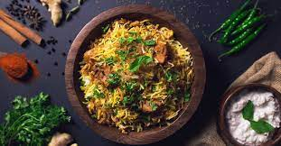

Iam Dinesh racharla ,i creative innovation with latest technology is my passion. right now im pursuing my masters in Northwest Missori state university .
It is one of the many dishes of the Malabar Muslim community, and very popular. The ingredients are chicken, spices and the specialty is the choice of rice called khyma. Khyma rice is generally mixed with ghee.
